夏天是吃姜最好的季节。此时，气温升高，人体皮肤表面热，脾胃比较虚寒。提前用姜枣茶补补脾胃，把病邪驱赶出去，夏天会过得舒服一些。
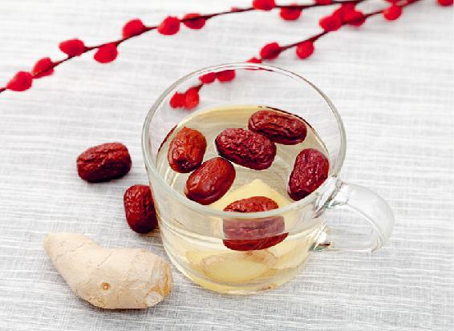
原料：带皮生姜1块、红枣6个。
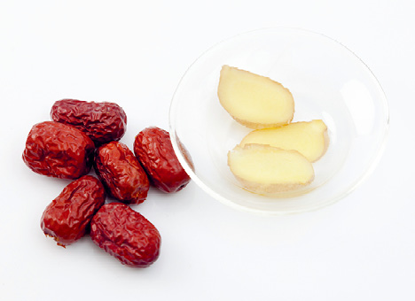
原料准备：把生姜放面粉水中泡洗10分钟，冲洗干净。不要去皮，切三大片。红枣洗净，掰开。
做法一：煮姜枣茶
红枣和姜片一起加冷水下锅，煮开后转中火再煮10分钟以上，放入保温杯继续焖泡。可以反复冲泡。
做法二：泡姜枣茶
把姜切薄片，加红枣，用沸水冲泡，放入杯子中多焖一会儿。可以反复冲泡。
做法三：煮姜枣粥
带皮生姜用刀拍扁，大枣掰开，每天早上熬粥的时候。把准备好的生姜和大枣放进去跟粥一起熬即可。
立夏节气，我们重点要固摄肾气，可以常吃糯米、豆子和鸡蛋。吃核桃壳煮鸡蛋，固肾的效果更好。
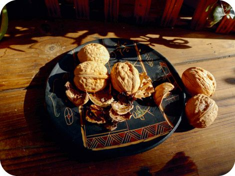
原料：核桃壳6个（带分心木一起入锅）、鸡蛋6个、酱油适量、盐少许。
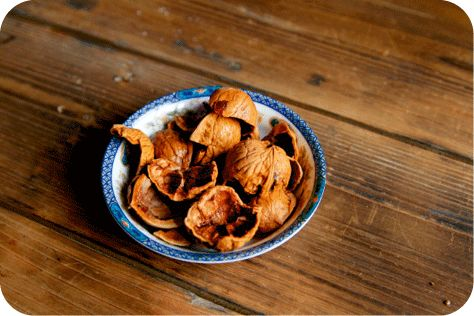
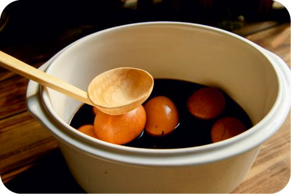
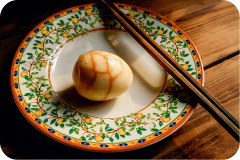
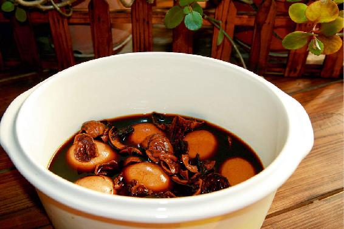
做法：
a 核桃壳洗净，加清水泡30分钟。
b 大火煮开，转小火煮1小时，晾凉。
c 将鸡蛋（带壳）放入核桃水中，加入适量酱油、盐，大火煮开，转小火煮6～7分钟。
d 不要关火，等蛋白凝固，将鸡蛋壳敲出裂纹。
e 继续煮10分钟，关火起锅。
允斌叮嘱：
a 酱油和盐根据自己的口味放。
b 女性注意避开经期。
为了给身体的生长加把力，小满时我们要先给身体减轻负担。此时，吃些梅子能够帮我们完成这个工作。
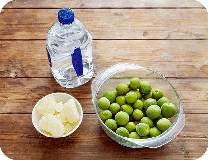
原料：青梅1 000克、白酒1 500毫升、红糖（老冰糖或蜂蜜）250～500克。
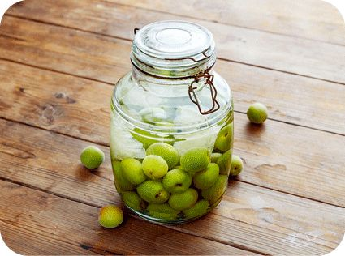
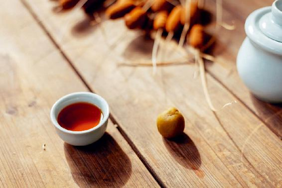
做法：
a 青梅用盐水泡一会儿，冲洗干净，沥干水分，放进广口玻璃瓶。
b 在瓶里放一半红糖，倒入白酒，放五六分满，盖好盖子，放在阴凉避光处。
c 等红糖完全溶解，再把另一半红糖放进去。
d 3个月以后就可以喝了。
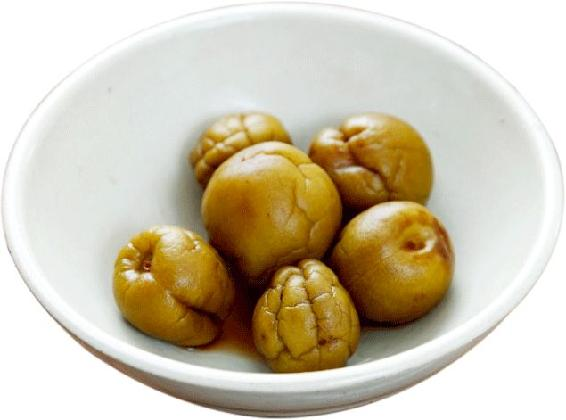
青梅酒里的梅子，捞出来以后能直接吃，还可以把它晒成酒梅干，保存起来当零食吃。
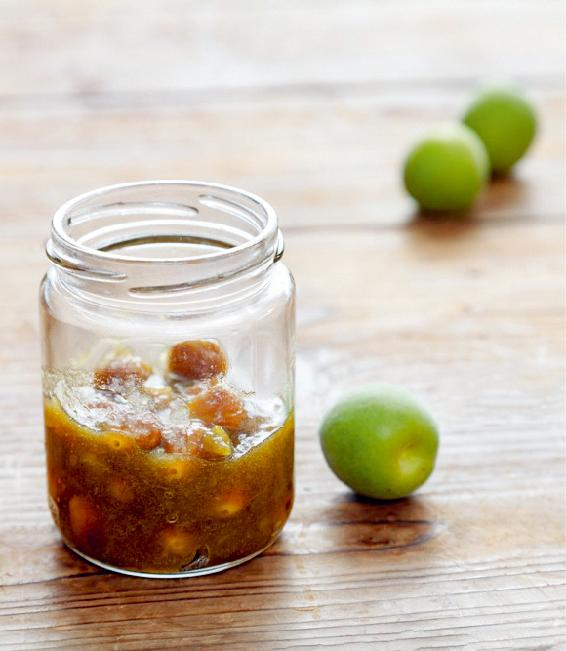
原料：新鲜梅子500克、冰糖250克、盐少许。
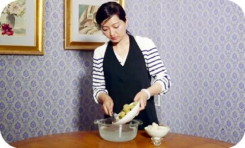
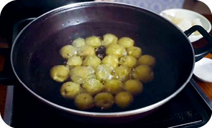
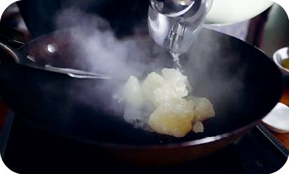
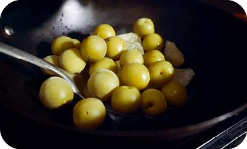
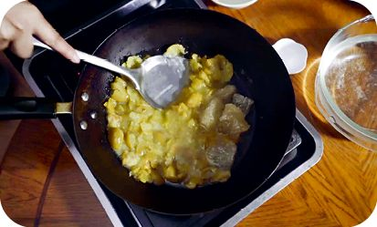
做法：
a 梅子洗净，把梅子放在盐水里泡24小时，去除涩味。
b 把梅子冷水下锅，中火煮开，把水倒掉。
c 把梅子压碎，加少量水，放入冰糖，再放1克盐，用小火熬制，注意不要粘锅。等果肉与冰糖融合，开始冒大泡泡时关火。
d 梅子核挑出来，单独存放备用。把果酱装在玻璃瓶里，晾凉。
允斌叮嘱：
a 带梅子核的酱，可以加水煮开，当酸梅汤喝。
b 玻璃瓶用开水煮一下消毒，每次吃的时候用无水无油的勺子。
樱桃不仅养心、养血，还能养颜。人吃了以后会感觉很有精神，手脚都有力量。
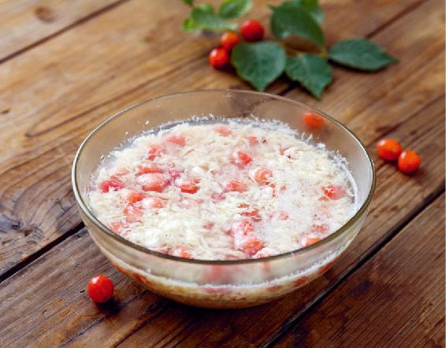
原料：樱桃、鸡蛋、醪糟（酒酿）。
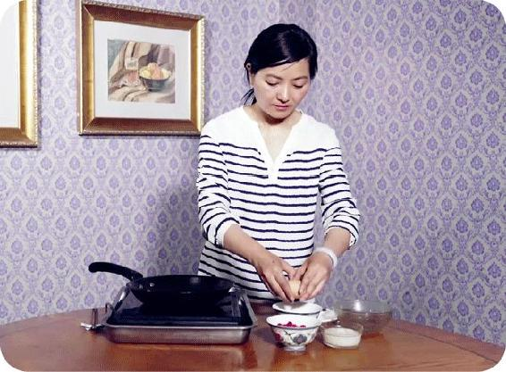
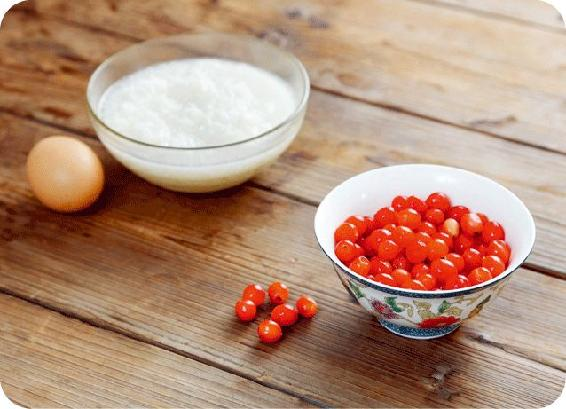
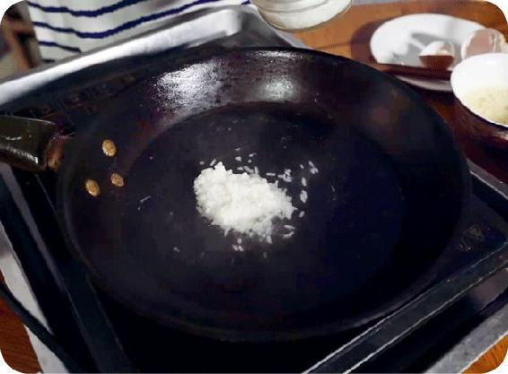
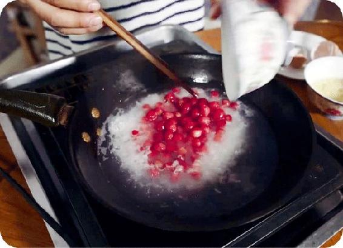
做法：
a 樱桃用盐水泡10分钟，洗净，去掉果柄。
b 清水烧开，放入几勺醪糟，再放入樱桃，保持大火煮几分钟，不要盖锅盖。
c 把鸡蛋打散，倒进锅里，用筷子迅速搅散成蛋花，关火起锅。
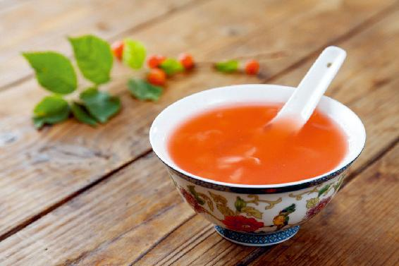
原料：小樱桃、白砂糖。
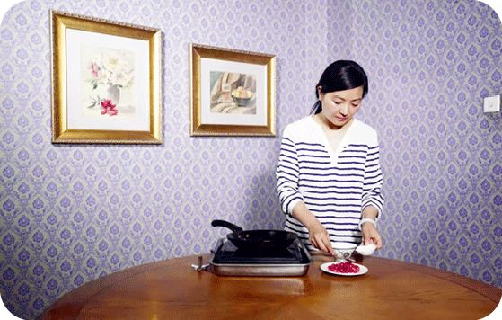
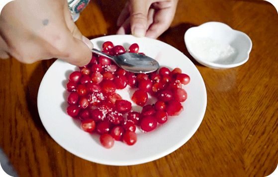
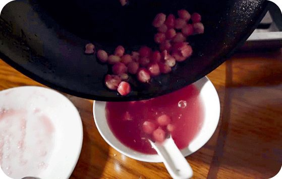
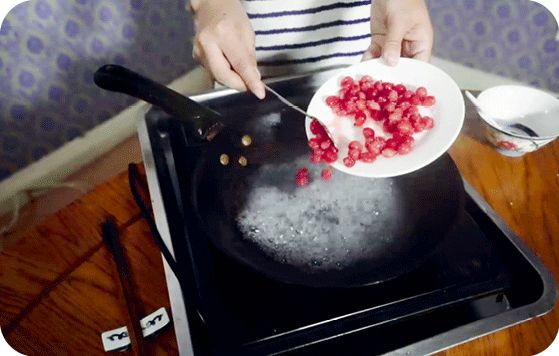
做法：
a 樱桃用盐水洗净，用勺子背压破，放入白砂糖腌一会儿。
b 水烧开，放入樱桃，几分钟后关火。
c 滤掉樱桃核后即可饮用。
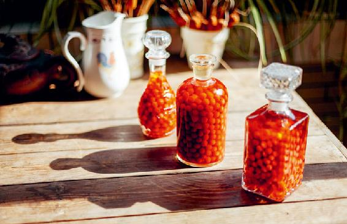
原料：毛樱桃500～1 000克、低度白酒或黄酒2 500毫升。
做法：
a 樱桃用盐水洗净，沥干，放入干净无油的玻璃瓶里，再把酒倒进去。
b 盖上盖子，10天后就可以喝了。
c 每天25～50毫升，分两次喝完。
桑葚可以说是水果中的“乌鸡白凤丸”，可滋阴，养血。更年期女性可以常年吃，男性吃，能补肾，清虚热。
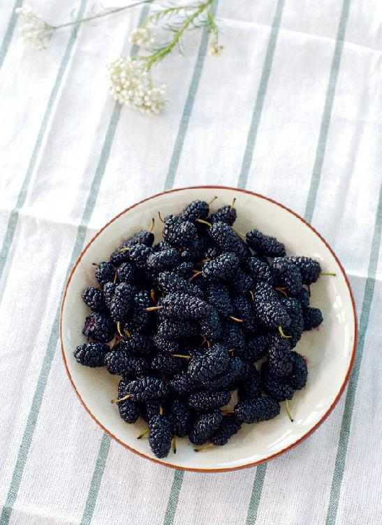
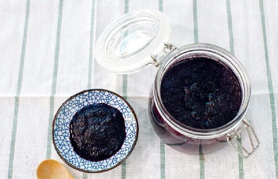
原料：新鲜黑桑葚、红糖。
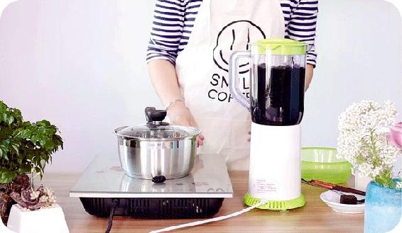
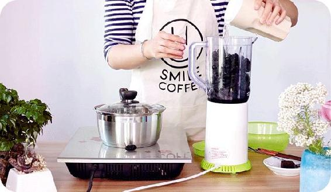
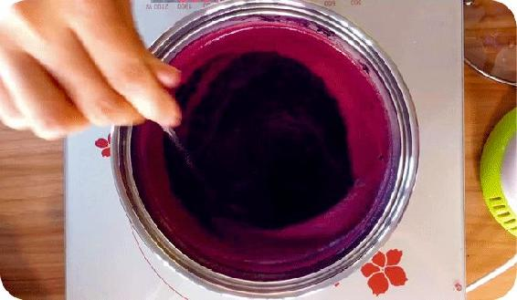
做法：
a 桑葚打汁，用小火熬到浓稠。
b 放入红糖，用筷子搅拌，避免糊锅，红糖完全溶化后起锅。
c 将桑葚膏装在干净无油的玻璃瓶里，放冰箱冷藏。
夏天的阳气已经帮我们打通了毛孔，我们就重点打通肠道，使血毒能够排出去。
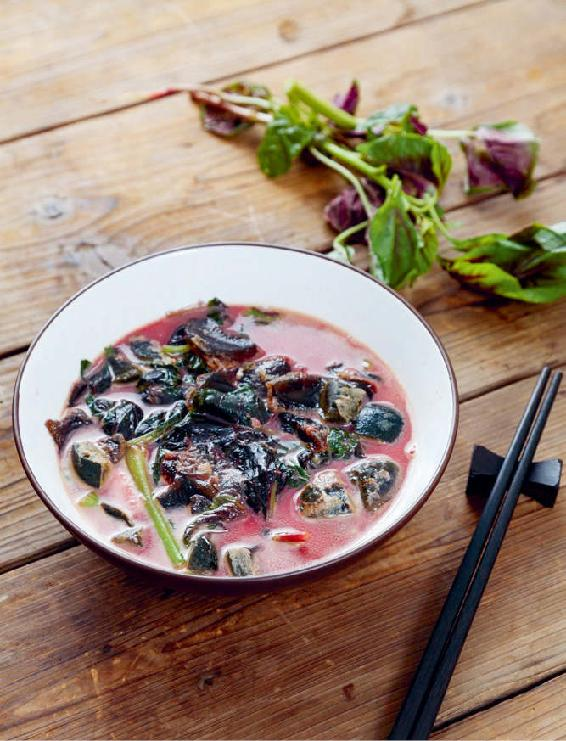
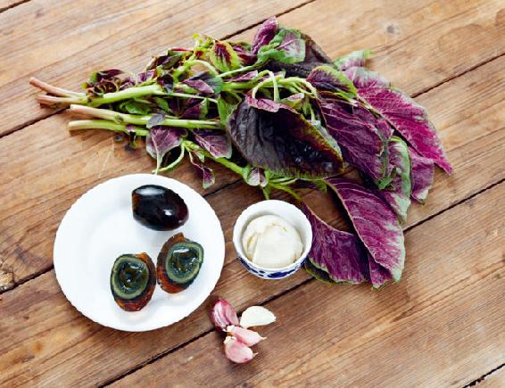
原料：红苋菜（嫩的、带根）1把、松花蛋2只、大蒜2～3瓣、油（猪油最好）、盐少许。
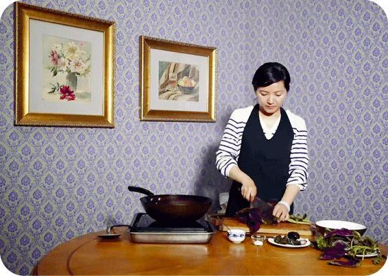
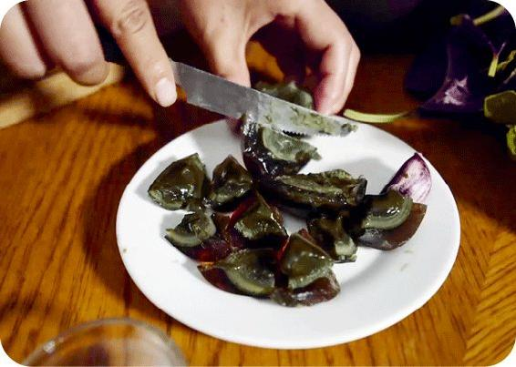
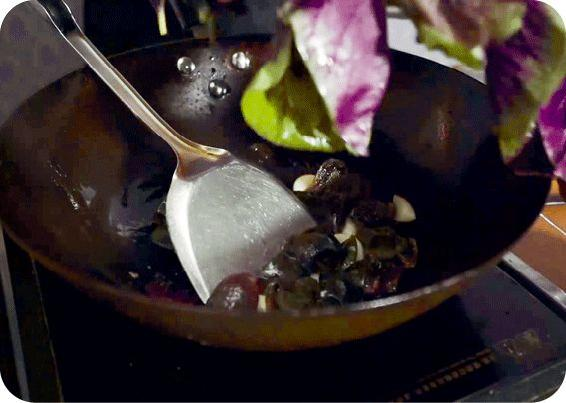
做法：
a 苋菜带根洗净，较长的可以切成两半，蒜切成两半。
b 锅里放油，把蒜爆香。
c 把松花蛋炒一下，再放入苋菜快炒两下，加少许盐。
d 放入高汤或开水，水开后煮2～3分钟关火。
允斌叮嘱：怀孕4个月以内的孕妇不要吃。
金银花是抗病毒的。夏天小孩容易感染病毒，喝点金银花有预防的作用。
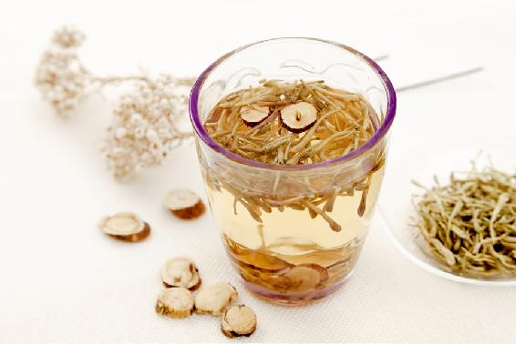
原料：金银花（干品30克，或鲜品1大把）、生甘草3克。
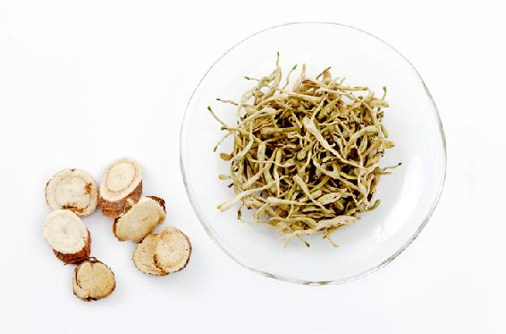
做法一（如果用干品）：
a 金银花与甘草一起放进茶壶，冲入沸水，1分钟后倒掉。
b 再次冲入沸水，焖制10分钟，当茶来喝。
做法二（如果用鲜品）：
a 甘草用开水烫洗一下，放进茶壶，冲入小半壶沸水，焖制10分钟。
b 把洗净的金银花放入茶壶，冲入70℃的开水，不要盖壶盖，5分钟后就可以喝了。
允斌叮嘱：风寒感冒的人暂时不要喝。
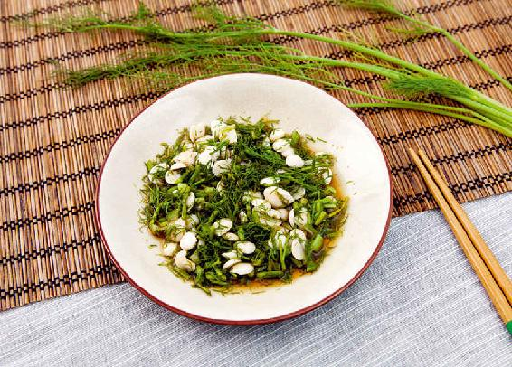
原料：甜杏仁、茴香菜。
做法：甜杏仁用水煮10分钟。茴香菜切碎，加入甜杏仁，以2∶1的比例放入酱油和醋，拌匀即可。
允斌叮嘱：不要放糖，否则会影响功效。不要用苦杏仁。